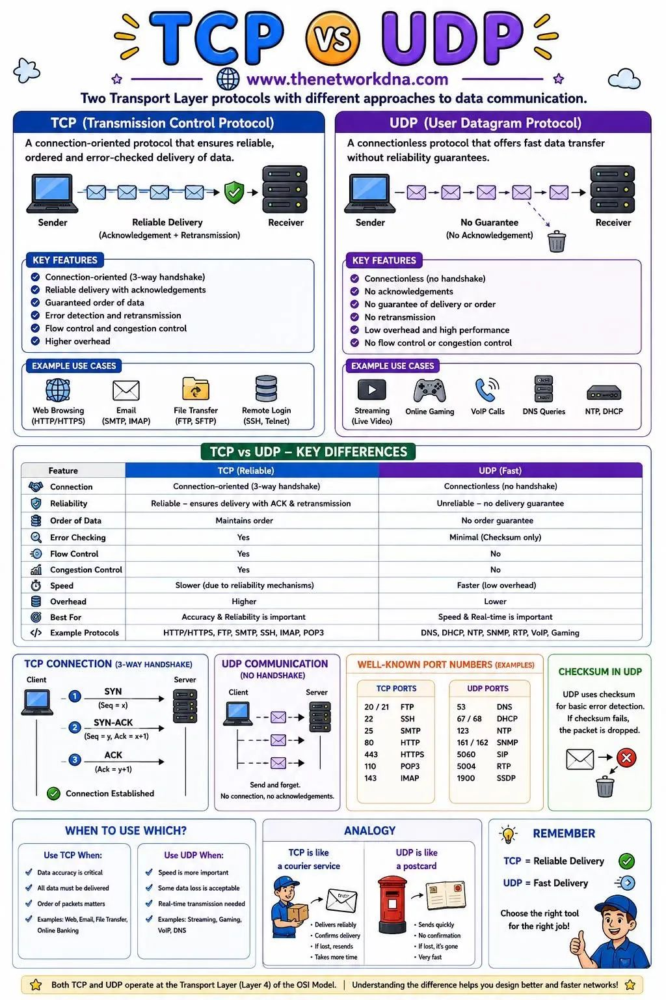
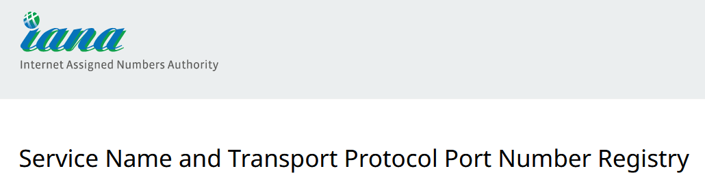

¿Qué tipos de puerto hay?

Imagina que los puertos son como ventanas virtuales que permiten que la información entre y salga en un ordenador. Hay dos tipos principales de protocolos que se usan en Internet: TCP y UDP.
Por un lado, el protocolo TCP es como el correo postal. Cuando enviamos información importante, como un correo electrónico, donde no podemos permitirnos una pérdida de datos, usamos TCP. Es muy confiable porque asegura que todos los datos lleguen en el orden correcto y sin errores. Como si cada paquete de datos tuviera un recibo de entrega.
Y, por otro lado, el protocolo UDP es más rápido pero menos confiable. Se utiliza para actividades como transmisiones de vídeo en directo o para juegos online, donde la pérdida de algunos datos no supone un gran problema. Como una conversación telefónica, donde puedes perder algunas palabras, pero esto no supone un problema en la recepción del mensaje.
Una de las diferentes más claras entre estos dos puertos es que la entrega en sí no está garantizada. Es decir, el puerto UDP se usa con el fin de enviar un datagrama del remitente al supuesto receptor, el cual se entrega en un paquete IP. Por lo tanto, los números de puertos son los que marcan la diferencia significativa entre un datagrama UDP y el paquete IP. En cambio, por culpa de la falta de garantía de la correspondiente entrega, el puerto TCP es la que se elige para aquellos servicios en los que es necesario que el envío de los datos sea de manera segura y confiable. Como puede ser el caso de emails o sitios web.

Tipos de puertos
TCP y UDP hacen referencia al protocolo de la capa de transporte utilizado para la comunicación extremo a extremo entre dos host, los puertos forman parte del propio segmento TCP o datagrama UDP para que la comunicación se establezca correctamente. Podríamos decir que los «puertos» son algo así como las «puertas» hacia un determinado servicio, independientemente de si utilizamos TCP o UDP ya que ambos protocolos hacen uso de los puertos. Los puertos en sí mismos no son peligrosos, un puerto es un puerto y da lo mismo que sea el puerto 22 que el 50505, lo que más importante es el uso que se le da a un puerto, lo peligroso es tener un puerto abierto hacia un servicio de la capa de aplicación que no esté protegido, porque cualquiera se podría conectar a dicho servicio y explotar vulnerabilidades o hackearnos directamente. Por supuesto, siempre es necesario que si exponemos un puerto a Internet, controlemos el tráfico con un IDS/IPS para detectar posibles ataques, y tener el programa que está escuchando en este puerto actualizado.
Tanto en TCP como en UDP tenemos un total de 65535 puertos disponibles, tenemos una clasificación dependiendo del número de puerto a utilizar, ya que algunos puertos son los comúnmente llamados «conocidos», y que están reservados para aplicaciones específicas, aunque hay otros muchos puertos que se utilizan habitualmente por diferentes software para comunicarse tanto a nivel de red local o a través de Internet. También tenemos los puertos registrados, y los puertos efímeros.
- Puertos conocidos: los puertos conocidos (well-known en inglés) van desde el puerto 0 hasta al 1023, están registrados y asignados por la Autoridad de Números Asignados de Internet (IANA). Por ejemplo, en este listado de puertos está el puerto 20 de FTP-Datos, el puerto 21 de FTP-Control, el puerto 22 de SSH, puerto 23 de Telnet, puerto 80 y 443 para web (HTTP y HTTPS respectivamente), y también el puerto de correo entre otros muchos protocolos de la capa de aplicación.
- Puertos registrados: los puertos registrados van desde el puerto 1024 hasta al 49151. La principal diferencia de estos puertos, es que las diferentes organizaciones pueden hacer solicitudes a la IANA para que se le otorgue un determinado puerto por defecto, y se le asignará para su uso con una aplicación en concreto. Estos puertos registrados están reservados, y ninguna otra organización podrá registrarlos nuevamente, no obstante, normalmente están como «semireservados», porque si la organización deja de utilizarlo podrá reutilizarse por otra empresa. Un claro ejemplo de puerto registrado es el 3389, se utiliza para las conexiones RDP de Escritorio Remoto en Windows.
- Puertos efímeros: estos puertos van desde el 49152 hasta el 65535, este rango de puertos se utiliza por los programas del cliente, y están constantemente reutilizándose. Este rango de puertos normalmente se utiliza cuando está transmitiendo a un puerto conocido o reservado desde otro dispositivo, como en el caso de web o FTP pasivo. Por ejemplo, cuando nosotros visitamos una web, el puerto de destino siempre será el 80 o el 443, pero el puerto de origen (para que los datos sepan cómo volver) hace uso de un puerto efímero.
Principales puertos TCP
Cuando necesitamos acceder a un servicio desde Internet, es totalmente necesario abrir un puerto en nuestro router. Actualmente disponemos de dos protocolos en la capa de transporte, TCP y UDP, por tanto, dependiendo del tipo de servicio que queramos utilizar, tendremos que abrir el puerto TCP o UDP, aunque también podría haber servicios que necesiten abrir un puerto TCP y UDP simultáneamente.
El protocolo TCP es un protocolo conectivo, fiable y orientado a conexión, esto significa que es capaz de retransmitir los segmentos de paquetes en caso de que haya alguna pérdida desde el origen al destino. El protocolo TCP para establecer la conexión realiza el 3-way handshake, con el objetivo de que la conexión sea lo más fiable posible. Si estamos utilizando algún protocolo en la capa de aplicación como HTTP, FTP o SSH que todos ellos utilizan el protocolo TCP, en la primera comunicación se realizará este intercambio de mensajes.
Si vas a montar en tu casa, oficina o empresa algún tipo de servidor, como un servidor FTP, SSH o OpenVPN, entonces deberás abrir uno o varios puertos para poder hacer uso de estos servicios y acceder desde Internet. Actualmente todos los routers hacen NAT con la IP pública, por tanto, es completamente necesario abrir puertos en la NAT, o mejor dicho, realizar el reenvío de puertos (port forwarding) para que sean accesibles desde Internet. A continuación, podrás ver un completo listado de los principales puertos TCP que usan muchos protocolos de la capa de aplicación y también aplicaciones:
- Puerto 0: TCP en realidad no usa el puerto 0 para la comunicación de red, pero este puerto es bien conocido por los programadores de redes. Los programas de socket TCP usan el puerto 0 por convención para solicitar que el sistema operativo elija y asigne un puerto disponible. Esto evita que un programador tenga que elegir («codificar») un número de puerto que podría no funcionar bien para la situación.
- Puerto 21: El puerto 21 por norma general se usa para las conexiones a servidores FTP en su canal de control, siempre que no hayamos cambiado el puerto de escucha de nuestro servidor FTP o FTPES.
- Puerto 22: Por normal general este puerto se usa para conexiones seguras SSH y SFTP, siempre que no hayamos cambiado el puerto de escucha de nuestro servidor SSH.
- Puerto 23: Telnet, sirve para establecer conexión remotamente con otro equipo por la línea de comandos y controlarlo. Es un protocolo no seguro ya que la autenticación y todo el tráfico de datos se envía sin cifrar.
- Puerto 25: El puerto 25 es usado por el protocolo SMTP para él envió de correos electrónicos, también el mismo protocolo puede usar los puertos 26 y 2525.
- Puerto 53: Es usado por el servicio de DNS, Domain Name System.
- Puerto 80: Este puerto es el que se usa para la navegación web de forma no segura HTTP.
- Puerto 101: Este puerto es usado por el servicio Hostname y sirve para identificar el nombre de los equipos.
- Puerto 110: Este puerto lo usan los gestores de correo electrónico para establecer conexión con el protocolo POP3.
- Puerto 123: Es un puerto utilizado por el NTP o Protocolo de tiempo en red, es uno de los protocolos más importantes a nivel de redes, ya que se utiliza para mantener los dispositivos sincronizados en Internet. Podemos incluso considerarlo vital, ya que, debido a la precisión de los relojes, facilitan mucho la interrelación de problemas de un dispositivo a otro.
- Puertos 137, 138 y 139: Estos puertos son utilizados por el Protocolo NetBIOS o NBT, lo habréis escuchado mucho si trabajáis en redes en Windows, ya que ha sido durante mucho tiempo el protocolo TCP principal para interconectar los equipos que están bajo este sistema operativo, lógicamente se utiliza en la mayoría de las veces en combinación con el IP utilizando así la famosa combinación TCP/IP que todos conocemos en este mundillo.
- Puerto 143: El puerto 143 lo usa el protocolo IMAP que es también usado por los gestores de correo electrónico.
- Puerto 179: Es el puerto utilizado por el Protocolo de puerta de enlace fronteriza o BGP por sus siglas en inglés, es otro protocolo muy importante a nivel de redes, ya que, en su mayoría, es utilizado por los proveedores de servicio para ayudar a mantener las enormes tablas de enrutamiento que existen hoy en día. También es utilizado para procesar las inmensas cantidades de tráfico en las redes, por lo que es uno de los protocolos más utilizados en las redes públicas.
- Puerto 194: Aunque herramientas como aplicaciones de mensajería para teléfonos inteligentes y servicios como Slack y Microsoft Teams han reducido el uso de Internet Relay Chat, IRC sigue siendo popular entre personas de todo el mundo. Por defecto, IRC usa el puerto 194.
- Puerto 443: Este puerto es también para la navegación web, pero en este caso usa el protocolo HTTPS que es seguro y utiliza el protocolo TLS por debajo.
- Puerto 445: Este puerto es compartido por varios servicios, entre el más importante es el Active Directory.
- Puerto 587: Este puerto lo usa el protocolo SMTP SSL y, al igual que el puerto anterior sirve para el envío de correos electrónicos, pero en este caso de forma segura.
- Puerto 591: Es usado por Filemaker en alternativa al puerto 80 HTTP.
- Puerto 853: Es utilizado por DNS over TLS.
- Puerto 990: Si utilizamos FTPS (FTP Implícito) utilizaremos el puerto por defecto 990, aunque se puede cambiar.
- Puerto 993: El puerto 993 lo usa el protocolo IMAP SSL que es también usado por los gestores de correo electrónico para establecer la conexión de forma segura.
- Puerto 995: Al igual que el anterior puerto, sirve para que los gestores de correo electrónico establezcan conexión segura con el protocolo POP3 SSL.
- Puerto 1194: Este puerto está tanto en TCP como en UDP, es utilizado por el popular protocolo OpenVPN para las redes privadas virtuales.
- Puerto 1723: Es usado por el protocolo de VPN PPTP.
- Puerto 1812: se utiliza tanto con TCP como con UDP, y sirve para autenticar clientes en un servidor RADIUS.
- Puerto 1813: se utiliza tanto con TCP como con UDP, y sirve para el accounting en un servidor RADIUS.
- Puerto 2049: es utilizado por el protocolo NFS para el intercambio de ficheros en red local o en Internet.
- Puertos 2082 y 2083: es utilizado por el popular CMS cPanel para la gestión de servidores y servicios, dependiendo de si se usa HTTP o HTTPS, se utiliza uno u otro.
- Puerto 3074: Lo usa el servicio online de videojuegos de Microsoft Xbox Live.
- Puerto 3306: Puerto usado por las bases de datos MySQL.
- Puerto 3389: Es el puerto que usa el escritorio remoto de Windows, muy recomendable cambiarlo.
- Puerto 4662 TCP y 4672 UDP: Estos puertos los usa el mítico programa eMule, que es un programa para descargar todo tipo de archivos.
- Puerto 4899: Este puerto lo usa Radmin, que es un programa para controlar remotamente equipos.
- Puerto 5000: es el puerto de control del popular protocolo UPnP, y que por defecto, siempre deberíamos desactivarlo en el router para no tener ningún problema de seguridad.
- Puertos 5400, 5500, 5600, 5700, 5800 y 5900: Son usados por el programa VNC, que también sirve para controlar equipos remotamente.
- Puertos 6881 y 6969: Son usados por el programa BitTorrent, que sirve para e intercambio de ficheros.
- Puerto 8080: es el puerto alternativo al puerto 80 TCP para servidores web, normalmente se utiliza este puerto en pruebas.
- Puertos 51400: Es el puerto utilizado de manera predeterminada por el programa Transmission para descargar archivos a través de la red BitTorrent.
- Puerto 25565: Puerto usado por el famoso videojuego Minecraft.
Un aspecto muy importante de los puertos TCP, es que existe un rango de puertos desde el 49152 al 65535 que son los puertos efímeros, es decir, con cada conexión de origen que nosotros realicemos, se utilizan estos puertos que son dinámicos. Por ejemplo, si realizamos una petición a una web, el puerto de origen estará en este rango 49152-65535, y el puerto de destino será el 80 (HTTP) o 443 (HTTPS).
Otro detalle muy importante, es que, si utilizas el protocolo FTP, hoy en día se utiliza siempre FTP PASV, por lo que no solamente es necesario abrir el puerto TCP 21 para control, sino que deberemos abrir un rango de puertos para el intercambio de archivos entre el cliente FTP y el servidor FTP, de lo contrario, no podremos empezar a realizar las transferencias de datos.
No obstante, hay que tener otros puntos en cuenta, como es el caso de que no ofrece una separación entre las diferentes interfaces, protocolos o servicios, al igual que fue desarrollado de primeras en redes de área amplia. Por lo que no está realmente optimizado para redes más pequeñas como LAN o PAN.
En cualquier caso, estos serían los puertos más usados e importantes cuando hacen uso del protocolo TCP. En los equipos siempre los tendremos abiertos a no ser que un firewall lo esté cerrando explícitamente, pero en el router deberemos abrir todos estos puertos (port-forwarding o también conocido como reenvío de puertos) ya que estamos en un entorno NAT, y todos los puertos están cerrados.
Principales puertos UDP
- Puerto 23: Este puerto es usado en dispositivos Apple para su servicio de Facetime.
- Puerto 53: Es utilizado para servicios DNS, este protocolo permite utilizar tanto TCP como UDP para la comunicación con los servidores DNS.
- Puerto 67: Los servidores del Protocolo de configuración dinámica de host usan el puerto UDP 67 para escuchar las solicitudes.
- Puerto 68: Por su parte los clientes DHCP se comunican en el puerto UDP 68.
- Puerto 69: Este puerto es utilizado sobre todo por el Protocolo trivial de transferencia de archivos o TFTP, dicho protocolo es el que nos ofrece un método para transferir nuestros archivos, pero sin tantos requisitos para el establecimiento de sesiones como podría por ejemplo utilizar el FTP. Cabe destacar que al utilizar UDP en lugar de TCP, este protocolo no puede garantizar de ninguna forma que nuestros archivos hayan sido transferidos de manera correcta, por lo que el dispositivo al que lo estamos enviando, debe tener la capacidad de verificar que dicha transferencia se ha realizado adecuadamente.
- Puerto 88: El servicio de juegos en red de Xbox utiliza varios números de puerto diferentes, incluido el puerto UDP 88.
- Puerto 161: De manera predeterminada, el Protocolo simple de administración de redes usa el puerto UDP 161 para enviar y recibir solicitudes en la red que se administra.
- Puerto 162: Se utiliza el puerto UDP 162 como predeterminado para recibir capturas SNMP desde dispositivos administrados.
- Puerto 500: este puerto es utilizado por el protocolo de VPN IPsec, concretamente se usa por ISAKMP para la fase 1 del establecimiento de la conexión con IPsec.
- Puerto 514: Es usado por Syslog, el log del sistema operativo.
- Puerto 1194: este puerto es el predeterminado del protocolo OpenVPN, aunque también se puede utilizar el protocolo TCP. Lo más normal es usar UDP 1194 porque es más rápido a la hora de conectarnos y también de transferencia, obtendremos más ancho de banda.
- Puerto 1701: Es usado por el protocolo de VPN L2TP.
- Puerto 1812: se utiliza tanto con TCP como con UDP, y sirve para autenticar clientes en un servidor RADIUS.
- Puerto 1813: se utiliza tanto con TCP como con UDP, y sirve para el accounting en un servidor RADIUS.
- Puerto 4500: este puerto también es utilizado por el protocolo de VPN IPsec, se utiliza este puerto para que el funcionamiento de la NAT sea perfecto. Este puerto se utiliza en la fase 2 del establecimiento IPsec, pero también tenemos que tener abierto el puerto UDP 500.
- Puerto 51871: es utilizado por el protocolo de VPN Wireguard de manera predeterminada.
Cabe destacar que los números de puerto TCP y UDP entre 1024 y 49151 se denominan puertos registrados, la Autoridad de Números Asignados de Internet mantiene una lista de servicios que utilizan estos puertos para minimizar los usos conflictivos.
A partir de estos numeros en adelante y a diferencia de los puertos con números más bajos, los desarrolladores de nuevos servicios TCP/UDP pueden seleccionar un número específico para registrarse con IANA en lugar de que se les asigne un número. El uso de puertos registrados también evita las restricciones de seguridad adicionales que los sistemas operativos imponen a los puertos con números más bajos.
Tal y como habéis visto, tenemos una gran cantidad de puertos TCP y UDP que utilizaremos muy a menudo. Estos son los principales puertos que podemos utilizar para los diferentes servicios, no obstante, hay cientos de puertos TCP y UDP más que utilizan diferentes aplicaciones, pero estos son los más importantes y utilizados.
Puertos más utilizados
Como puedes ver, existen gran cantidad de puertos en Internet que se utilizan para las diferentes aplicaciones y servicios que nos podemos encontrar y utilizar. Cada uno de ellos tiene su función específica en la transmisión de datos. Pero hay algunos de ellos, los cuales tienen un índice de uso mucho más alto que los demás, lo cual los convierte en los más utilizados. Estos son:

- Puerto 80: Es el puerto utilizado por HTTP, el protocolo de transferencia de hipertexto que se utiliza para acceder a todas las páginas web. La mayoría de los sitios web lo utilizan para transmitir todo su contenido.
- Puerto 443: Es el puerto utilizado por HTTPS, el protocolo de transferencia de hipertexto seguro. Permite la transmisión segura de datos por toda la red y se utiliza para transacciones en línea, como compras, transacciones bancarias, bolsa, entre otros.
- Puerto 21: Es el puerto utilizado por el protocolo FTP (File Transfer Protocol), que se utiliza para la transferencia de archivos entre dispositivos en una red. Su uso principal es para la transferencia de archivos grandes, como imágenes o videos entre otros archivos.
- Puerto 22: Es el puerto utilizado por el protocolo SSH (Secure Shell), que se utiliza para la conexión segura a un servidor remoto. Es utilizado por los administradores de sistemas para la gestión de servidores, entre otras aplicaciones con funciones similares.
- Puerto 25: Es el puerto utilizado por el protocolo SMTP (Simple Mail Transfer Protocol), que se utiliza para la transferencia de correo electrónico. Se utiliza para poder enviar correos electrónicos desde un cliente de correo electrónico a un servidor de correo electrónico.
- Puerto 53 UDP: Es el puerto utilizado por el protocolo DNS (Domain Name System), que se utiliza para traducir nombres de dominio en direcciones IP. Es esencial para la navegación por internet hoy en día, ya que permite que los navegadores web accedan a los sitios web utilizando nombres de dominio y no direcciones IP que son más complicadas.
- Puerto 110: Es el puerto utilizado por el protocolo POP3 (Post Office Protocol version 3), que se utiliza para recibir correo electrónico en un cliente de correo electrónico. En combinación con el puerto 25.
- Puerto 161 UDP: se utiliza por el protocolo SNMP para visualizar la configuración y administrar diferentes equipos como routers, switches, y también servidores. Es recomendable cerrarlo si no vas a usarlo.
- Puerto 4444: este puerto se suele utilizar por parte de troyanos y malware en general, es recomendable tenerlo siempre bloqueado.
- Puertos 6660-6669: estos puertos es usado por el popular IRC, si no lo usamos, no lo abrimos.
Si quieres conocer todos los puertos que hay ahora mismo asignados oficialmente en IANA, puedes visitar este enlace:

https://www.iana.org/assignments/service-names-port-numbers/service-names-port-numbers.xhtml